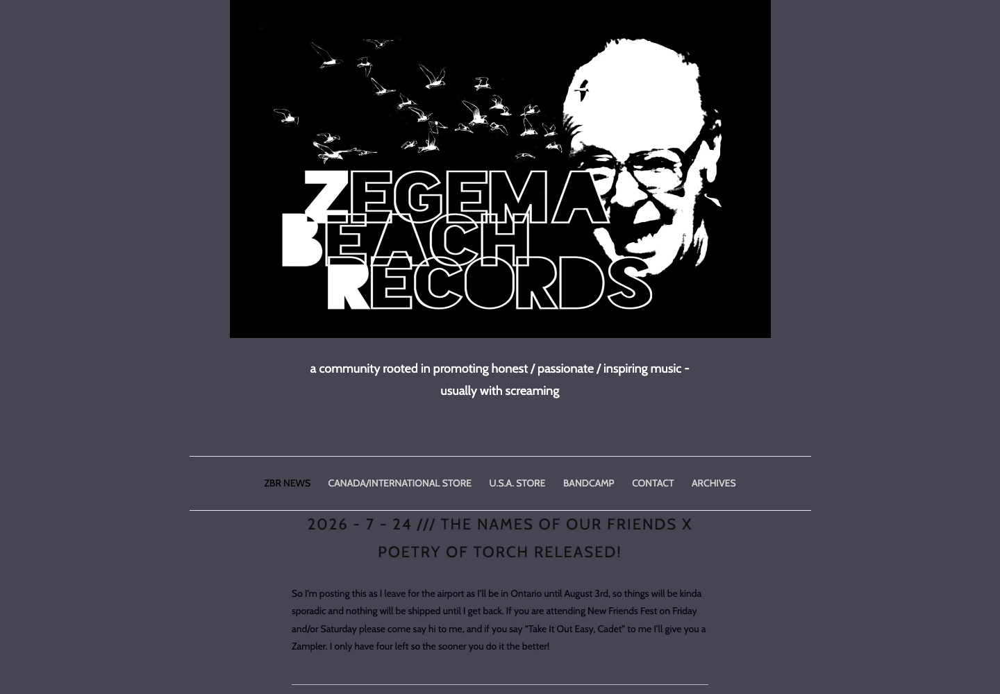
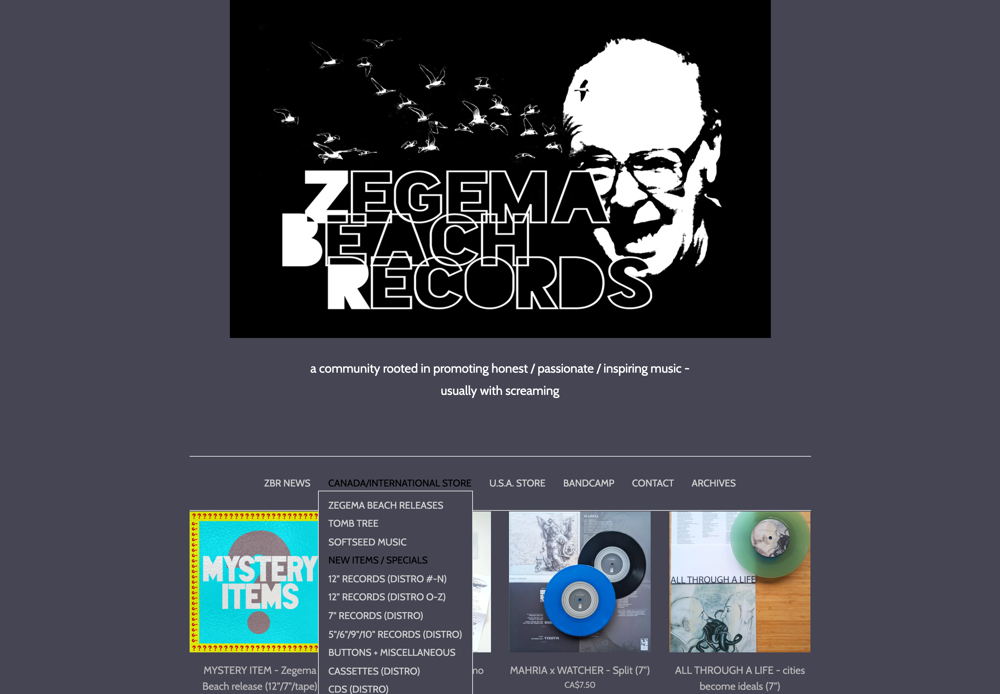
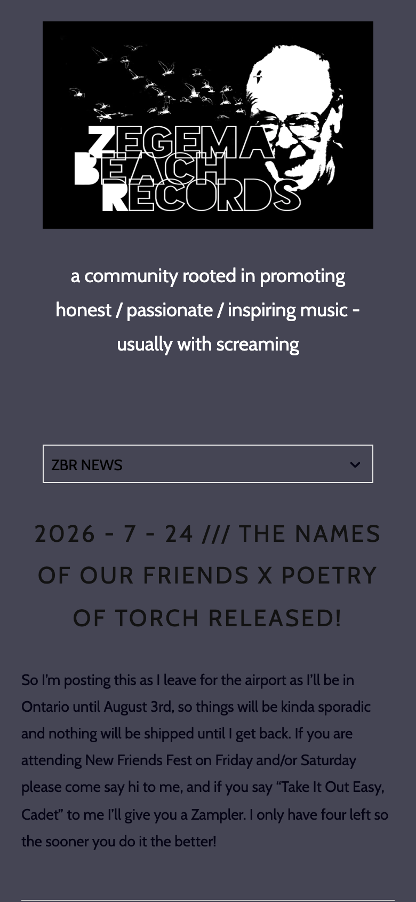
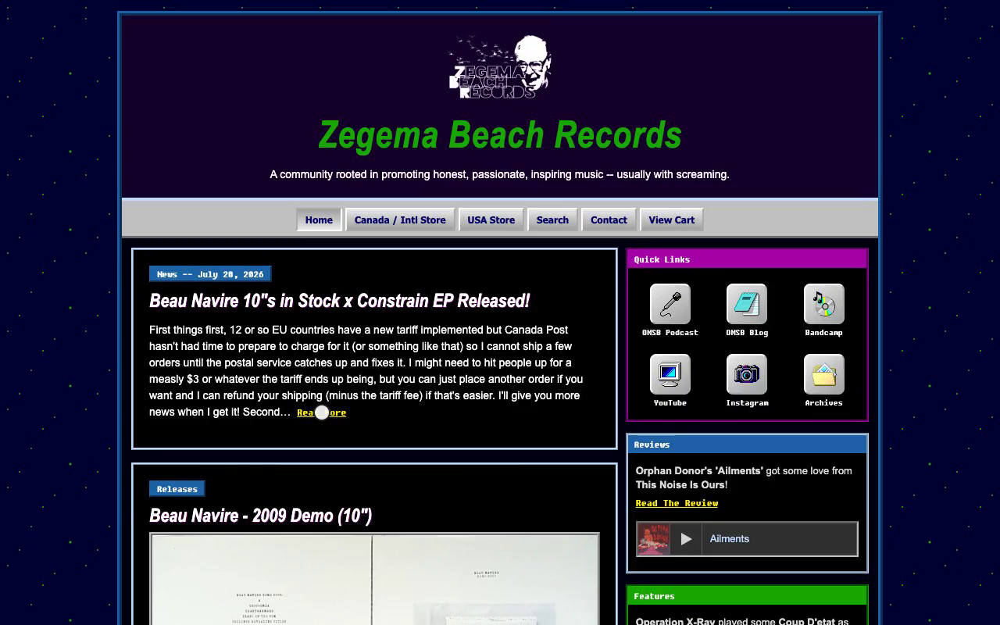
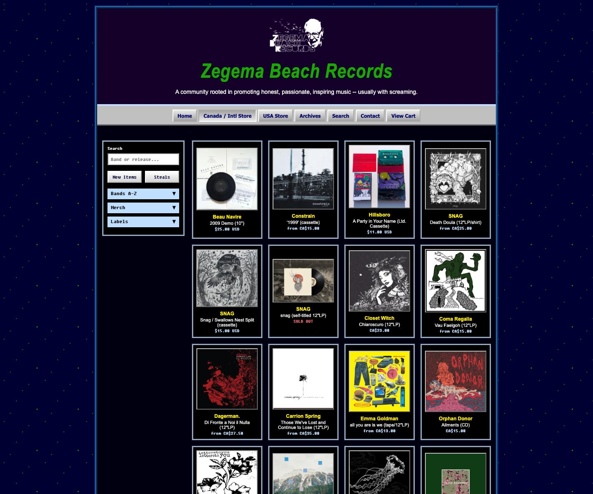
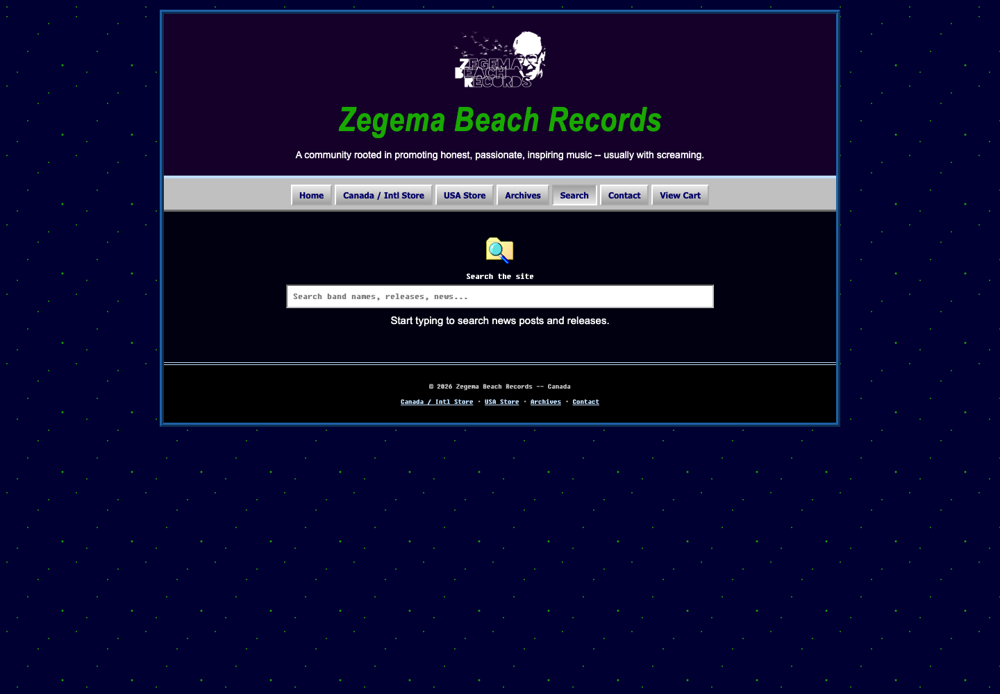
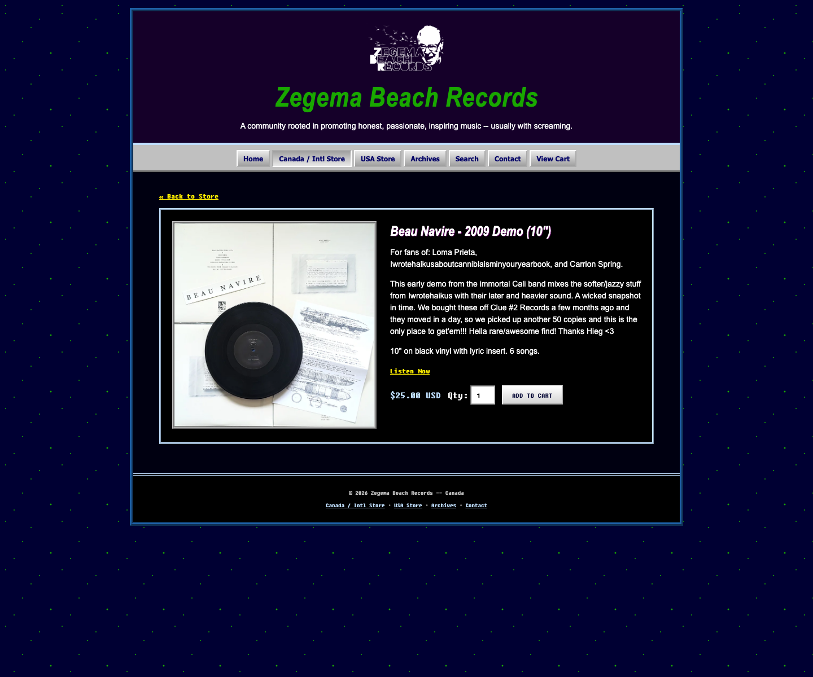
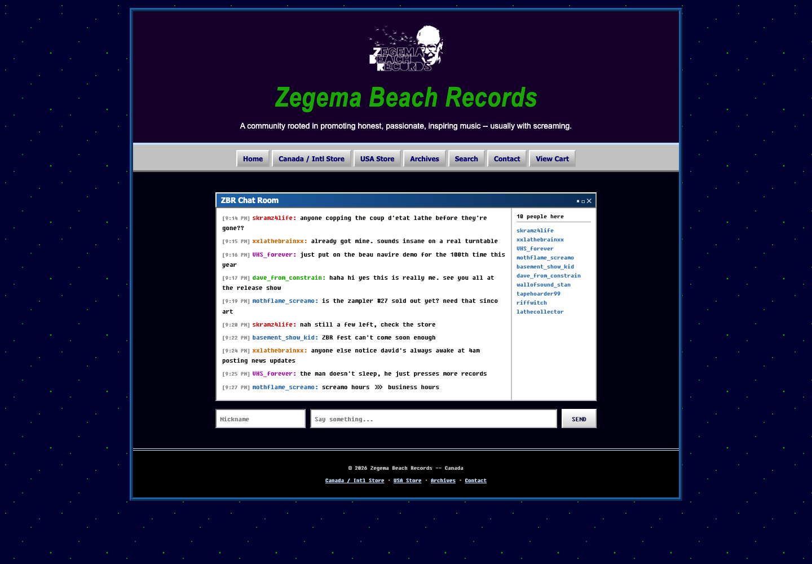
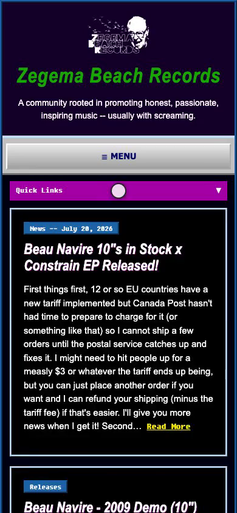

Rebuilding a one-person record label's website — without losing its DIY, scrappy soul.
Zegema Beach Records is a screamo/hardcore label and mailorder shop. The site has been built page by page on Squarespace for years. It works: people find it and buy records. But it was never designed as a cohesive, user friendly news and shopping hub, and it shows.
We'll walk through what's actually live today and how I rebuilt it with help from Claude Code — keeping the DIY feeling intact while adding the browsing and shopping tools a real store needs.
zegemabeachrecords.com, as of today

Disorganized content. Blog posts, product blocks, and reviews are interleaved with no visual separation.
No dedicated store landing page. The current store consists of a drop down navigation menu.
Large hero logo. Logo takes up a large portion of the desktop landing page, preventing users from viewing actual content.
The homepage's full scroll height on a standard desktop viewport — roughly 45 screens of scrolling to reach the bottom, with no jump links, pagination, or way to filter what you're looking at.
No search. No filters. No sort. Nothing to narrow a catalog of hundreds of releases.
19 separate flat pages split by format and alphabet instead — 12" (#–N), 12" (O–Z), 7", 5"/6"/9"/10", Cassettes, CDs, Posters (#–O), Posters (P–Z), Buttons, Stickers, Steals, two Sold Out pages…
Finding one band's tape means already knowing which of those 19 pages it's filed under.

The label runs a companion podcast and blog, and posts on Instagram and YouTube — none of it is linked from the site's navigation. The Archives menu is a single flat dropdown of 30-plus band interviews, listed as bare text with no thumbnails, search, or grouping.

Low-contrast text. Body copy renders in near-black over dark slate — well under WCAG contrast minimums.
One unlabeled dropdown for all six pages. It has a chevron, but no visible page list — you have to open it just to see where you can go.
Same full-screen hero on every page. On a phone, that's a full scroll before any unique content appears.
The goal was never to make it sleek and modern. Make it feel like the fan-run site it's always been — just usable.

Full nav, including Search — Home, Store, Archives, Search, Contact, Cart, always visible.
A Quick Links hub puts the podcast, blog, Bandcamp, YouTube, Instagram, and chat room one click from the homepage — for the first time.
DIY aesthetic. Anyone can make a Geocities page, but make it bespoke, organized, user friendly and easily shoppable with modern functionality.
One storefront, not nineteen pages. Every format and label lives in a single filterable grid.
Real filters: text search, New Items / Steals toggles, Bands A–Z, Merch, and Labels — collapsible, and full-width on mobile.
Selected filters persist as you move between the grid and a product page, so "Back to Store" returns you to where you were.


Type a band or release name, get live matches across news posts and the full catalog site-wide.
Zero to something the old site never had at all.
Photo gallery with lightbox, plus swipe support on mobile.
Listen Now, size/variant pickers, quantity, Add to Cart — with a cart that persists across the visit.
Per-release copy carried over faithfully from the live site — nothing about the label's voice was flattened.


An AOL-style Chat Room — one of several personality touches, alongside the Quick Links icon grid and Fixedsys-styled headers.
A Guestbook, too — sign it or browse what other visitors left, leaning further into the fan-site feeling.
Mailing List widget — send news/releases/updates straight to a user's inbox.
A labeled ☰ Menu button, not an unlabeled dropdown showing only the current page.
Readable contrast throughout — no near-black text on dark backgrounds.
Swipeable photo galleries — built for touch, not just resized from desktop.
Quick Links navigation added under the main nav bar.

| Feature | Live site | Redesign |
|---|---|---|
| Site search | None | Live search across news & catalog |
| Store landing page | 19 flat category pages | One filterable grid |
| Filters / sort | None | Search, New/Steals, Bands A–Z, Merch, Labels |
| Product pages | Squarespace default | Gallery + lightbox, swipe, variant picker |
| Cart | Squarespace default | Persistent, custom-built |
| Social / podcast / blog links | Not linked in nav | Quick Links hub on homepage |
| Mobile nav | Unlabeled dropdown | Labeled ☰ Menu button |
| Contrast / accessibility | Fails WCAG in places | Passes throughout |
| Community / chat | None | AOL-style Chat Room |
| Guest book | None | Sign & browse a Guestbook |
| Mailing list | None | Sign-up widget on homepage |
| Widgets | None | Reviews, Features & Johnny's Recos panels |
| Page organization | Single column | Two-column layout (feed + widgets) |
| DIY / nostalgic feel | Somewhat | Preserved & extended |
Click around the actual staging build: search the catalog, filter the store, open a product page, drop something in the cart, or say hi in the Chat Room.
zbr-rho.vercel.app → Opens in a new tabEvery functional gap on the live site — search, filters, a store landing page, social links, mobile accessibility — got solved without reaching for a template that would've sanded off what makes this label's site feel handmade.